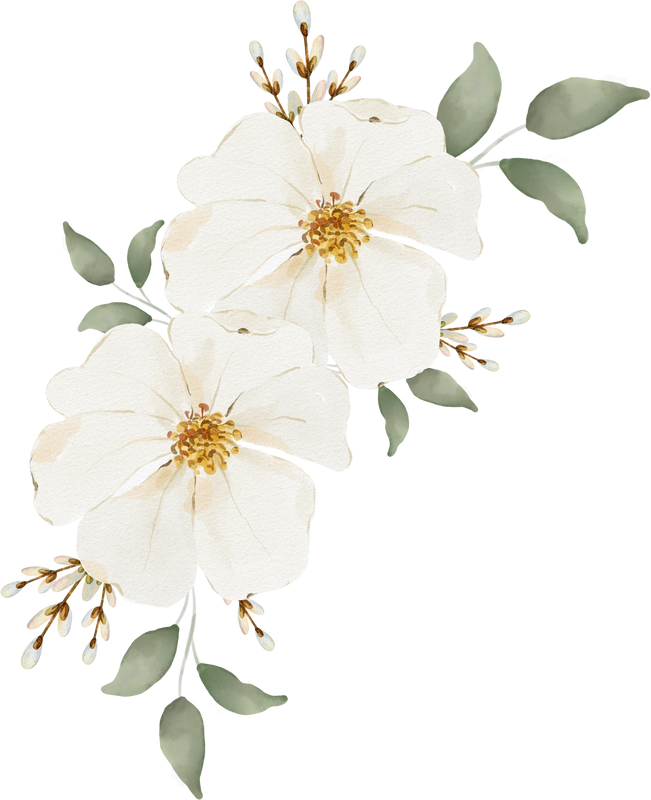
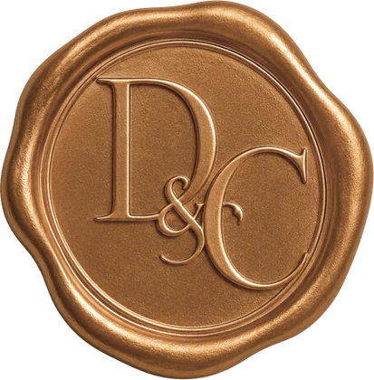

ES
EN
No pudimos cargar el formulario. Revisa tu conexión e inténtalo de nuevo.
Reintentar
0%
Preparando tu invitación
¡Nos casamos!
DANIELA
&
CARLOS

Reservado para
Invitado especial
Hemos reservado (1) pase para ti
Ver invitación

Toca para abrir